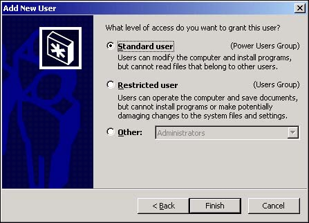
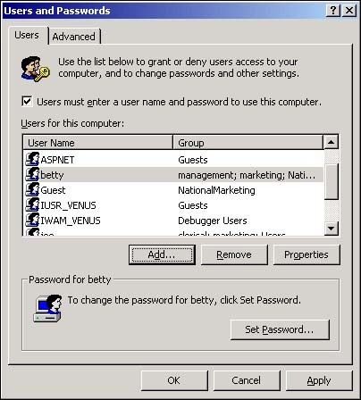
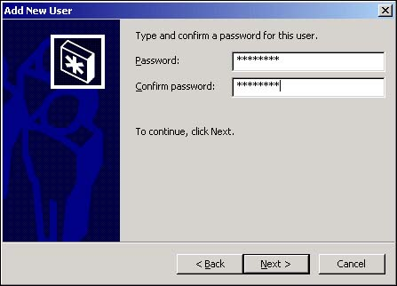

11.1 Create Windows NT/2000 Users
Although it might seem odd to begin a discussion of SQL Server security by describing the process of adding users to Windows NT/2000, it's important to note that SQL Server security is tightly integrated with the Windows security registry. SQL Server administrators are pleased with the fact that SQL Server automatically recognizes Windows NT and Windows 2000 users, saving a considerable amount of administrative time.
This section explains the process of adding new users to Windows 2000. The next section describes how to add functional groups to Windows. Although these sections deal with Windows 2000, the process is nearly identical for Windows NT.
Windows must recognize users before they can log in to the network and use the computer's resources. You need to add a number of users to the Windows user registry. How do you make sure that all users are required to provide a network password before they can access the network?
Technique
Windows users cannot be added to the system from within SQL Server's Enterprise Manager. You'll have to use the Windows Control Panel applets to add new users and groups.
Note
 |
The settings you choose on this page of the Add New User dialog box do not affect the SQL Server settings you establish for the user. The settings you see in Figure 11.4 relate only to Windows and not SQL Server or the database data.

|
Note
|
The first step in the following example is different on Windows NT 4.0 and Windows 2000. For Windows NT 4.0, you go to Start, Programs, Administrative Tools, User Manager. For Windows 2000, you go to Start, Settings, Control Panel, Administrative Tools, Computer Management; then you right-click on Users.
Also, you must have administrative rights on the computer to add users to it.
|
Steps
SQL Server security is tightly integrated with Windows NT/2000 security. SQL Server recognizes the users and groups that are added to a Windows NT or Windows 2000 domain. The first step toward security for SQL Server, of course, is to add users to the computer system. This section describes how to add individual users to a Windows NT or Windows 2000 computer.
SQL Server consults the registered users on the computer when you create logins, discussed in How-To 11.5. The user's name and description are accessible from the SQL Server security dialog boxes and help you recognize each user as you create SQL Server logins and establish security profiles.
Choose Start, Settings, Control Panel and open the Users and Passwords Control Panel applet.
Make sure the check box labeled Users Must Enter a User Name and Password to Use This Computer is checked, as shown in Figure 11.1.

Click the Add button to open the Add New User dialog box.
Fill in the username, the full name of the user, and a description for the new user, as shown in Figure 11.2.
After you have provided the required user information, click the Next button to move to the second page of the dialog box.
Enter the new user's initial password into the password text box. Then type the password a second time in the Confirm Password text box (see Figure 11.3). When you're ready, click the Next button.

On the third page of the Add New User dialog box (see Figure 11.4), you specify the type of Windows access you want to provide this user. Although this information is not directly related to SQL Server, most often you will want to leave this setting at its default to Standard User.
In most cases, you do not want to provide a user with more access than necessary.
Note
|
The settings you choose on this page of the Add New User dialog box do not affect the SQL Server settings you establish for the user. The settings you see in Figure 11.4 relate only to Windows and not SQL Server or the database data.
|
When all settings are complete, click the Finish button to add the new user to the collection of users on your computer.
Comments
SQL Server's integration with Windows security is one of the major reasons that SQL Server has grown in popularity. Its ability to cooperate with Windows when authenticating users and providing database services dramatically reduces the administrative burden that is normally associated with server database engines.
Caution
|
Be sure to remove your temporary users after you are finished with them so that you do leave them hanging around.
|